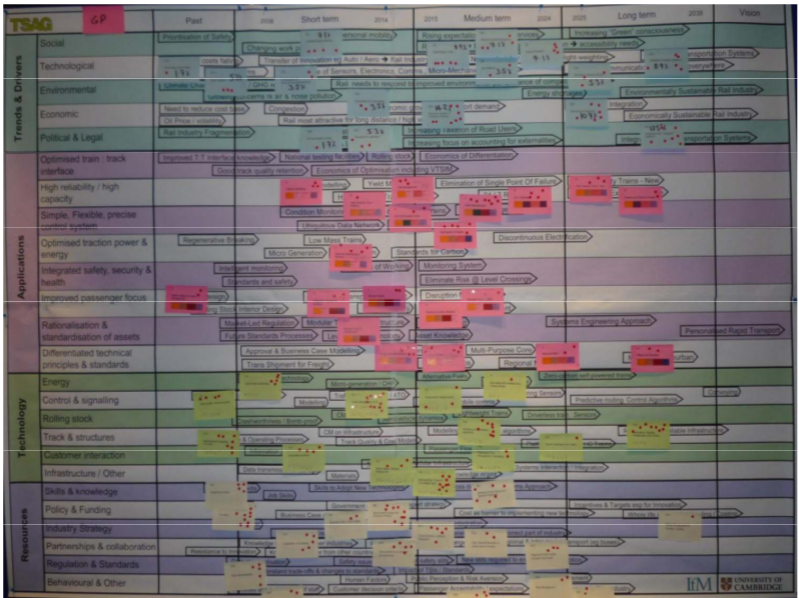

Curso Roadmapping Tecnológico
Introducción Roadmapping Tecnológico y Estratégico
Jaime Andrés García
Instituto Tecnológico Metropolitano
Medellín, 11 de Septiembre de 2015
¿Qué es un roadmap?
Fuente imagen: 20somethingkidsand1kookyteacher.com
A "roadmap" is an extended look at the future of a
chosen field of inquiry composed from the collective
knowledge and imagination of the brightest drivers
of change in that field
(Galvin, 1998)
Technology roadmapping represents a powerful
technique for supporting technology management and
planning, especially for exploring and communicating
the dynamic linkages between technological
resources, organizational objectives and the changing
environment.
( Phaal, Farrukh & Probert, 2013)
Gestión Tecnológica
(Probert, Phaal & Farrukh, 2000)
Estructura base de Roadmap Tecnológico
(Kostoff & Schaller, 2001)
Tipos de Roadmaps
Tipos de Roadmaps
Expert Based
Computer Based
Hybrid
(Kostoff & Schaller, 2001)
Formatos y Propósitos
( Phaal, Farrukh & Probert, 2004)
Estructura Roadmap T-Plan
( Phaal, Farrukh & Probert, 2004)
Proceso T-Plan
( Phaal & Oughton, 2012)
Proceso T-Plan
( Phaal, Farrukh & Probert, 2004)
Previo a los Workshops
Presentación de la técnica de roadmapping tecnológico a la organización
Entender la importancia de la aplicación de la técnica en la organización
Sensibilización y Aceptación por parte de los principales stakeholders
Previo a los Workshops
Crear sensación de urgencia
Determinar alcance, visión y objetivos del ejercicio
Formar grupo participante
(Gerdsri, 2013)
Previo a los Workshops
Empoderar a los participantes
Preparar a los participantes con los principales conceptos
Planear como generar victorias rápidas
(Gerdsri, 2013)
Workshop 1 Market - Introduction
Presentación de los participantes
Propósito de los talleres
Metodología de trabajo
Workshop 1 Market
Product Performance Dimensions
¿Cuáles son los factores más importantes para medir nuestro producto?
- Facilidad de uso
- Precio
- Tamaño
Workshop 1 Market
Market / Business Drivers
¿Por qué los clientes compran y comprarán el producto? ¿Qué necesitan?
¿Qué factores estratégicos se deben tener en cuenta?
¿Qué normativa, tendencia, situación puede afectar el desarrollo del producto?
Priorización de Drivers
Workshop 1 Market
Ejemplo Market / Business Drivers
(Ball, Bidasaria & Castillejos, 2014)
Workshop 1 Market
Ejemplo Market / Business Drivers
(Yoon et. al, 2014)
Workshop 1 Market - SWOT
Fuente imagen: discoveryresearchgroup.com
Workshop 1 Market - Gaps
¿Qué otra información requerimos?
Clientes
Competidores
Tendencias
Legislación
Workshop 2 Product - Introduction
Resumen resultados del taller anterior
Propósito del taller
Metodología de trabajo
Workshop 2 Product
Product Feature Concepts
Características del Bien/Servicio para satisfacer los drivers
Brechas y productos intermedios
Categorizar estas características en clusters (10 ó menos)
Workshop 2 Product - Linkage Analysis Grid
( Phaal, Farrukh & Probert, 2013)
Workshop 2 Product
Ejemplo Linkage Analysis Grid
(Ball, Bidasaria & Castillejos, 2014)
Workshop 2 Product
Ejemplo Quality Function Deployment
(Yoon et. al, 2014)
Workshop 2 Product
Product Strategy
Diferenciadores
Precio
Distribución
Familia de Productos y Plataforma
Workshop 2 Product - Gaps
¿Qué otra información requerimos?
Requisitos de los clientes
Productos de los competidores
(Posicionamiento de estos productos)
Workshop 3 Technology - Introduction
Resumen resultados de los talleres anteriores
Propósito del taller
Metodología de trabajo
Workshop 3 Technology
Technological Solutions
Tecnologías y Capacidades Tecnologícas que conectan con los productos
Brechas y tecnologías intermedias requeridas
Categorizar estas tecnologías en clusters (10 ó menos)
Se pueden generar capas adicionales (Ejemplo I+D)
Workshop 3 Technology
Ejemplo Technological Solutions
(Yoon et. al, 2014)
Workshop 3 Technology
Ejemplo Technological Solutions Gaps
(Ball, Bidasaria & Castillejos, 2014)
Workshop 3 Technology - Gaps
¿Qué otra información requerimos?
Estado del arte
Tendencias y predicciones sobre la tecnología
Patentes y publicaciones
Workshop 4 Charting - Introduction
Resumen resultados de los talleres anteriores
Propósito del taller
Metodología de trabajo
Workshop 4 Charting - Roadmapping
Aspectos a tener en cuenta:
Alcance y formato
Capas, ciclos de innovación
Hitos, Negociación mercado - tecnología (Según impacto)
Discusión estrategia de innovación y riesgos
Workshop 4 - Ejemplos de Roadmaps
Technology Roadmapping for Medical Imaging (Ball, Bidasaria & Castillejos, 2014)Intel Roadmap (Fuente: impress.co.jp)
Applying Nanotechnology to Water Treatment
Lista de roadmaps públicos
Workshop 4 - Herramientas para el diseño de Roadmaps
Roadmaps Físicos - Post-it
( Phaal & Oughton, 2012)
Workshop 4 - Herramientas para el diseño de Roadmaps
Programas de diseño
Microsoft Visio, Google Drawing, Power Point, Illustrator
Lucid Chart, Creately, Gliffy
CMapTools, Bizagi
Workshop 4 - Herramientas para el diseño de Roadmaps
Software
Accolade Roadmapping
Aha!, Product Plan, Roadmunk, Pro Plan
Confluence, Trello
Workshop 4 Charting - Gaps - Way Forward
¿Qué aprendimos sobre el producto, la estrategia y el proceso?
Mantenimiento e Integración del Roadmap
Consolidar roadmaps en uno maestro (idealmente)
Establecer procedimientos para la revisión y actualización
Integrar el proceso de roadmapping con los procesos existentes en la organización
Transferir el ownership sobre el proceso de roadmapping (volverlo operativo)
(Gerdsri, 2013)
Herramientas Integradas al Roadmap
( Phaal & Oughton, 2012)
Herramientas Integradas al Roadmap
( Carvalho , Fleury & Lopes, 2013)
Bibliografía
Ball, L., Bidasaria, R., Castillejos, I., Pakdeekasem, P., Pornsatit, C., & Daim, T. U. (2014). Technology Roadmapping for Medical Imaging: Toward Improved Value. In Planning and Roadmapping Technological Innovations (pp. 101–134). Springer.
Carvalho, M., Fleury, A., & Lopes, A. P. (2013). An overview of the literature on technology roadmapping (TRM): Contributions and trends. Technological Forecasting and Social Change, 80(7), 1418–1437.
Galvin R. (1998). Science roadmaps. Science, 280, pp. 803.
Gerdsri, N., & Kocaoglu, D. F. (2007). Applying the Analytic Hierarchy Process (AHP) to build a strategic framework for technology roadmapping. Mathematical and Computer Modelling, 46(7), 1071–1080.
Bibliografía
Kostoff, R. N., & Schaller, R. R. (2001). Science and technology roadmaps. Engineering Management, IEEE Transactions on, 48(2), 132–143.
Phaal, R., Farrukh, C. J., & Probert, D. R. (2004). Technology roadmapping—a planning framework for evolution and revolution. Technological Forecasting and Social Change, 71(1), 5–26.
Phaal, R., Farrukh, C. J., & Probert, D. R. (2012) Roadmapping for strategy and innovation - aligning technology and markets in a dynamic world.
Phaal, R., Farrukh, C. J., & Probert, D. R. (2013). Fast-Start Roadmapping Workshop Approaches. In Technology Roadmapping for Strategy and Innovation (pp. 91–106). Springer.
Bibliografía
Yoon, B. S., White, C., Wease, G., Honnappa, L., Tsai, S.-T., Wang, X., & Daim, T. U. (2014). Technology Roadmap for Automotive Flexible Display. In Planning and Roadmapping Technological Innovations (pp. 159–175). Springer.